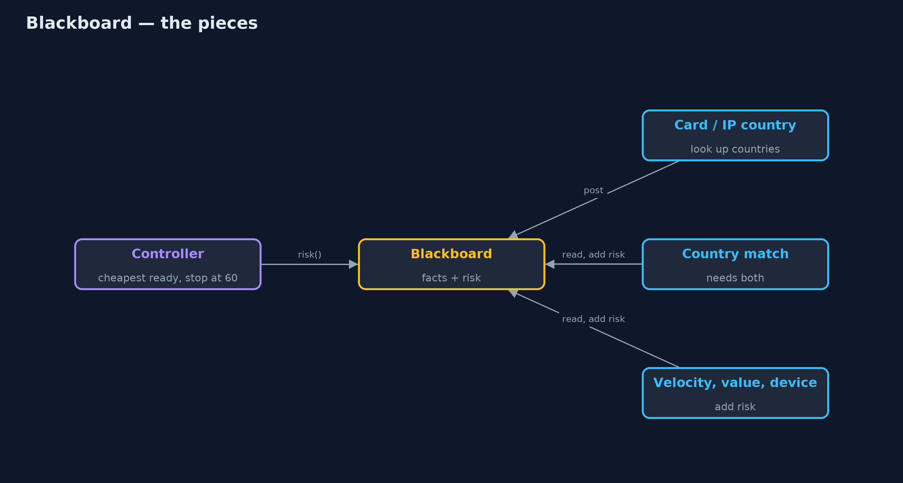
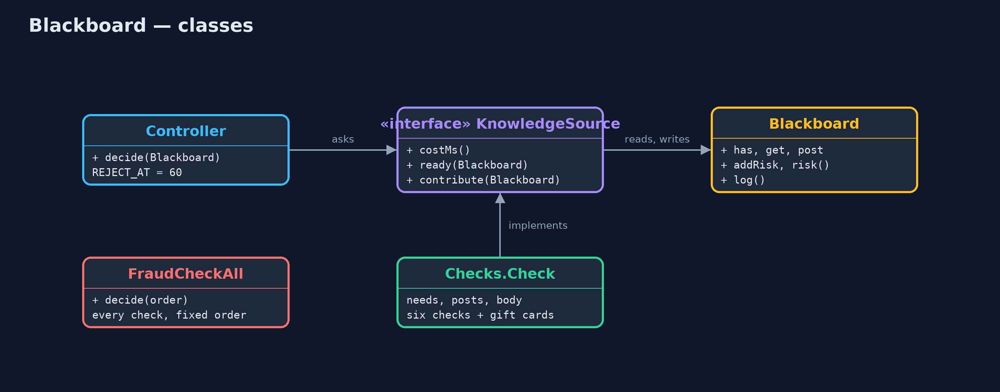
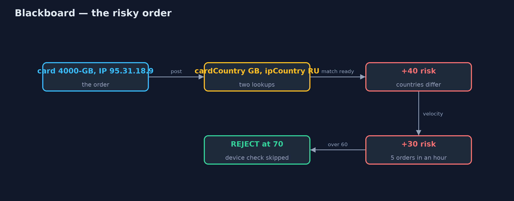
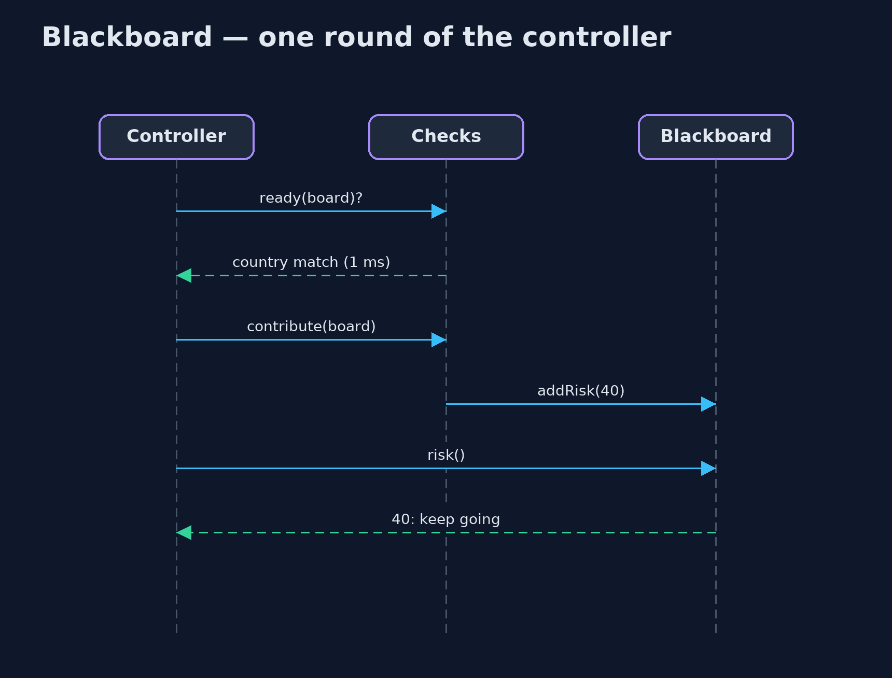

Blackboard Pattern
src/main/java/com/jk/explore/blackboard/
├── Blackboard.java The shared board: facts about one order that any check can read and add to, plus a running risk score
├── BlackboardDemo.java The five acts: one method that runs every check, the blackboard, stopping early, a new check, and the bill
├── Checks.java The shop's fraud checks, each written without knowing the others exist
├── Controller.java The pattern's organiser: repeatedly lets the cheapest ready check add to the board, and stops as soon as it can decide
├── FraudCheckAll.java Without the pattern: one method that runs every check, in a fixed order, every time
└── KnowledgeSource.java One independent checkLet independent experts read and add to one shared board, and let a controller choose who goes next and stop as soon as the answer is known.
Blackboard is a behavioural pattern for problems that no single piece of code can solve alone, and where the steps cannot be fixed in advance. Several independent experts, called knowledge sources, share one board of facts. Each expert says when it has what it needs, and then adds what it knows. A controller decides which ready expert goes next, and stops as soon as the answer is clear.
No expert calls another, or even knows the others exist. That makes it easy to add a new one, and lets the controller skip expensive work that is no longer needed.
The idea in everyday terms
Think of an incident room in a detective story. A big board on the wall holds every clue so far. The fingerprint expert cannot start until the lab sends a print. The phone analyst adds a name once the call records arrive. Nobody waits in a fixed queue: whoever can add something steps up. And the lead detective decides who speaks next, and closes the case the moment there is enough to go on.
The scenario
Before the online store accepts an order, it checks for fraud: where the card is from, where the shopper is, how many orders the account placed in the last hour, how big the order is, and whether the device looks like a real phone. All of it lived in one method that ran every check, in a fixed order, every time, including an 800 millisecond device check after the answer was already clear.
Run
./gradlew runThe demo tells the story in 5 acts, each printing exact numbers that the tests check:
| Act | What it shows |
|---|---|
| 1. Every check, every time | One method runs all 6 checks in a fixed order: the risky order is rejected after 902 ms, including an 800 ms check it did not need. |
| 2. The blackboard | Checks post facts to a shared board as soon as they have what they need; the good order is approved at risk 0. |
| 3. Stopping early | Card from GB, shopper in RU (+40) and 5 orders in an hour (+30): rejected at 70 after 5 checks and 102 ms; the device check never runs. |
| 4. A new expert | A gift-card check is added to the list without changing any other; £300 of gift cards is rejected, where it would have been approved. |
| 5. The bill | The order of checks is chosen at run time, so only the log tells the story; every check can read every fact. |
Test
./gradlew test10 tests in ControllerTest, DemoRunsTest. Every number the demo prints is asserted, and nothing depends on the clock, so every run gives the same result.
Technologies and versions
| Technology | Version | Used for |
|---|---|---|
| Java | 21 | the code (toolchain set in build.gradle) |
| Gradle | 9.2.1 (wrapper) | build and run, nothing to install |
| JUnit | 5.10.2 | the tests |
| videokit | repository tool | the narrated video and animation: Piper en_US-amy-medium, speed 0.8, longer pauses (the approved amy-slow voice) |
Learning Material
| Document | What it is for |
|---|---|
| Problem statement | the situation and what the project must show |
| Prerequisites | what you need to know first |
| Blackboard, explained | the acts in prose |
| Session guide | a one-hour lesson with exercises |
| Animated walkthrough | the acts step by step, narrated |
| Spec | what this project must be true of |
The pattern in one picture
The controller asks the experts who is ready; the experts only talk to the board.

Where each piece sits
One interface for every expert; the controller depends only on that interface.

How the data moves
Facts unlock checks; risk passes 60 and the controller stops.

Who calls whom, in order
Ask who is ready, run the cheapest, check the score.

Video
video/blackboard-pattern-explained.mp4 (with .m4a audio and .srt subtitles) is built by video/build_video.sh. Rendered media is not committed.
What it costs
- No fixed story. The order of the checks is chosen at run time, so the log is the only record of what happened and why.
- Everything is shared. Every expert can read every fact on the board, including sensitive ones such as the card number.
- A controller to get right. When to stop, and which expert goes first, are real decisions hidden in one class.
- Harder to test end to end. Each expert is easy to test alone; the combination depends on the facts.
When this is too much
When the steps are always the same and always in the same order, a plain method or a Chain of Responsibility is simpler and easier to read. The blackboard earns its keep when experts depend on each other's results in changing ways, when new experts arrive often, or when skipping work matters.
Where you have already met this
- Fraud and risk engines that combine many independent signals into one score.
- Speech recognition and early AI systems such as Hearsay-II, where the pattern was born.
- Rule engines such as Drools, whose rules fire when the facts they need are present.
- Multi-agent AI setups where agents post findings to a shared memory.
Where this sits
This project is in behavioural, next to Chain of Responsibility, which passes a request along a fixed line of handlers. A blackboard has no fixed line: whoever is ready goes next.